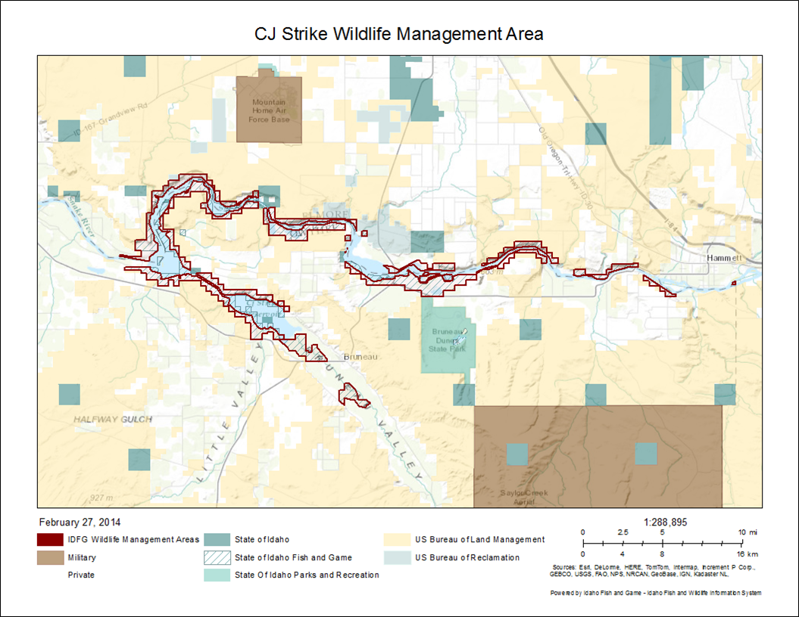

TOOLBAR: Create a PNG Image to Save or Print the Map
If you would like to create a PNG image of the map for printing or sharing, active this tool by clicking on the icon. Once the tool is activated, you will be prompted to choose a print format (Portrait or Landscape) and enter a title for your map. Then click the 'Print Map' button and a PNG image of the map area will be generated. You may have to zoom the map in/out to get the map image you desire. Your image will open in a new window. To save or print the image, right-click the image and select the appropriate task.
The image created will include: a user-specified title, date of creation, legend, scale bar, map scale, esri basemap copyright information, and IDFG IFWIS copyright. A PNG image is very easy to manipulate to suit your needs. If you would like to edit the image, you can easily crop; add a border, text or graphics; resize the image; etc. in Microsoft Paint or PowerPoint.

 HELPFUL TIP: If the map does not open in a new window and no error message was shown in the printing dialog box, make sure the popup-bocker is disabled for this site.
HELPFUL TIP: If the map does not open in a new window and no error message was shown in the printing dialog box, make sure the popup-bocker is disabled for this site.
HELPFUL TIP: The print task will not work if a feature has been highlighted by highlighting a DataGrid row . To get around this issue, it is suggested to "highlight" the cell using the Search for Properties query. For example, if you have queried for Craig Mountain WMA but would only like to "highlight" the property with Acquisition number 35-0828 simple query for this acquisition number. The surrounding properties will still be visible but this specific property will stand out.
Created with the Personal Edition of HelpNDoc: Easy EPub and documentation editor